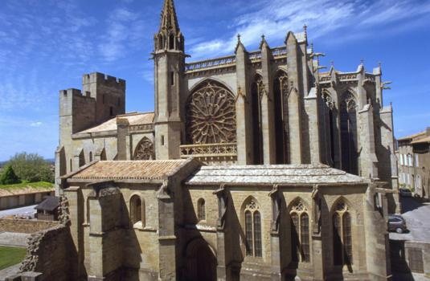

La basilique Saint-Nazaire
La basilique Saint-Nazaire, construite en grès (parement extérieur), est une église d'origine romane dont les parties les plus anciennes remontent au 11ème siècle. Sur son emplacement s'élevait à l'origine une cathédrale carolingienne dont il ne subsiste, aujourd'hui, aucune trace.
À l'aube de l'apogée de l'art roman, c'est donc d'abord une simple église bénie et consacrée cathédrale par le pape Urbain II en 1096 sous l'impulsion des Trencavel, qui lancent le chantier d'un nouvel édifice plus vaste. De cet édifice ne subsistent que les deux premiers piliers de la nef et la crypte, dont l'état dégradé donne à penser qu'il s'agissait d'un ouvrage antérieur. Elle épouse le plan de l'ancienne abside. Au 12ème siècle on édifie la nef actuelle, de six travées, qui fut laissée intacte lors des agrandissements de l'époque gothique, qui par contre se traduisirent par la destruction du chevet roman du xie siècle. Le portail roman a quant à lui été entièrement refait au 14ème siècle lors des restaurations de Viollet-le-Duc.
La basilique est agrandie entre 1269 et 1330 dans le style gothique importé par les nouveaux maîtres de la région, avec un transept et un chœur très élancés, un décor de sculptures et un ensemble de vitraux qui comptent parmi les plus beaux du sud de la France.

Un prélat bâtisseur, Pierre de Rochefort, finança la construction d'une grande partie des décors et l'achèvement des voûtes. Ses armoiries sont visibles dans le chœur, l'abside et le bras sud du transept, tandis que la chapelle du collatéral nord contient le monument commémoratif de la mort du contributeur. Un autre personnage, Pierre Rodier, évêque de Carcassonne, possède son blason dans la chapelle du collatéral sud.
Les rénovations d'Eugène Viollet-le-Duc ont largement transformé l'extérieur de la basilique, mais l'intérieur est le plus remarquable. Les deux styles, gothique et roman, se superposent sur les vitraux, les sculptures et tous les décors de l'église. Les façades comportent de nombreux vitraux des 13ème et 14ème siècles : ceux-ci représentent des scènes de la vie du Christ et de ses apôtres.
Jusqu'au 18ème siècle, la cathédrale Saint-Nazaire demeure pourtant le principal centre religieux de Carcassonne. À la fin de l'Ancien Régime, le chapitre cathédral entretient même un petit corps de musique comptant un organiste, un maître de musique et au moins cinq enfants de chœur. En 1790, cependant, la chapitre est supprimé. Ce n'est qu'en 1801 que l'église est déchue de son rang de cathédrale de Carcassonne au profit de l'église Saint-Michel, située dans la bastide à l'extérieur de la Cité. Ce transfert se déroule alors que la Cité est désertée par ses habitants au profit de la ville basse. Le titre de basilique lui est octroyé en 1898 par le pape Léon XIII.
Une communauté de chanoines vivait à proximité de la cathédrale avec une salle capitulaire et le dortoir à l'est, le réfectoire et les cuisines au sud et les caves et écuries à l'ouest. Mais l'ensemble des bâtiments sont démolis en 1792. Un cloître s'élevait également au sud de l'édifice. Son emplacement est aujourd'hui occupé par un théâtre de plein air établi en 1908.